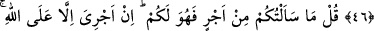
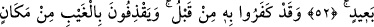
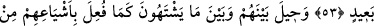
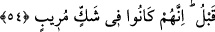

RABBİM GERÇEĞİ
ORTAYA KOYAR
46. (Rasûlüm! Onlara) de ki: Size bir tek öğüt vereceğim: Allah için ikişer ikişer
ve teker teker kalkın, sonra da düşünün. Arkadaşınızda (peygamberde) hiçbir
delilik yoktur! O ancak şiddetli bir azap gelip çatmadan evvel sizi uyaran bir
peygamberdir.
47. De ki: Ben sizden bir ücret istemişsem, o sizin olsun. Ücretim yalnız Allah’a
aittir. O, her şeye şahittir.
48. De ki: Kuşkusuz, Rabbim gerçeği ortaya koyar. Çünkü O, gaybı çok iyi
bilendir.
49. De ki: Hak geldi; artık bâtıl ne bir şeyi başlatabilir ne de geri getirebilir.
50. De ki: Eğer (haktan) saparsam, kendi aleyhime sapmış olurum. Eğer doğru
yolu bulursam, bu da Rabbimin bana vahyettiği (Kur’an) sayesindedir. Şüphesiz O,
işitendir, yakındır.
51. (Rasûlüm!) Telaşa düştükleri zaman, bir görsen! Artık kurtuluş yoktur, yakın
bir yerden yakalanmışlardır.
52. (İş işten geçtikten sonra:) “Ona inandık” demişlerdir, ama uzak yerden
(dünya hayatı gelip geçtikten sonra) îmâna kavuşmak onlar için nasıl mümkün olur?